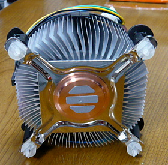

| TOP | weblog | TIPS | Works | リンク |
| 2013-03-17 Intel Core i7 は８０℃越えでも動作する 思い込みの続き。 甥っ子、ＳｈｏｗのモンスターＰＣを自作して持ち帰らせたところ、稼働中にドスンと電源が落ちる現象が出たと連絡がありました。 TermViewer8（遠隔操作ソフト）でマザーボードのデバイスドライバを全部最新にアップデートして。グラボのデバイスドライバもアップデートして、おまけにWindows Updateもやってみた。 CPUｎ温度が気になったので「Core Temp」でCPUの温度を測って見た。 アイドル状態でも５０℃付近で、Windows Update中に８０℃越えで、ドスンと電源が落ちました。 （思い込み） Core ｉシリーズには「ダブルグリスバーガー現象」といってCPUがやたらと高温になる個体がたまにあると言う事を知っていた。(下手に知っている知識というやつ） CPUが８０℃越えで動くはずがないと思いこんでいたので、この温度は相当誤差を含んでいると思いこんだ。 CPUファンの取り付けは自作PCの最重要作業の一つなので慎重にかつ確実に取り付けたはずと言う思い込み。 購入店に質問すると「アイドル時で３０℃越え、負荷時で８０℃超えは不良品の可能性大」と言う事で、かみさんに無理言って日本橋の購入店に持ち込んだ。 原因はすぐに判明、「CPUファンの取り付け不良、ヒートシンクの熱伝導面が全くCPUに密着してなかった」ため。  リテールCPUクーラー（CPUと一緒に販売されているクーラー）の裏面は上記のようになっていて、丸い部分がCPUと密着するんです。 ですが顕微鏡レベルで見るとCPUの表面もCPUクーラーの裏面もデコボコなので、熱伝導グリスと言うものを使います。 写真の３本の銀色のものがグリスです。 CPUクーラーが正しく取り付けられていると、このグリスは熱で溶けて全体に広がって熱伝導効率が上がって写真の様に放射線上に広がった金属面から熱が放出されるわけです。 さらに上にファン（小さい扇風機）がついていて放熱の効率をさらに高めています。 ですが、販売店のお兄さんがCPUクーラーを取り外して検査したところ、熱伝導グリスが全然とけてなくて写真と同じ状態でした。 要するにCPUクーラーとCPUの表面が全く密着しておらず、実質CPUクーラー無しで動いていた状態。 思い込みしないでCPUクーラーの取り付けを見直せば、わざわざ日本橋まで行くことなかったのに、トホホです。 |